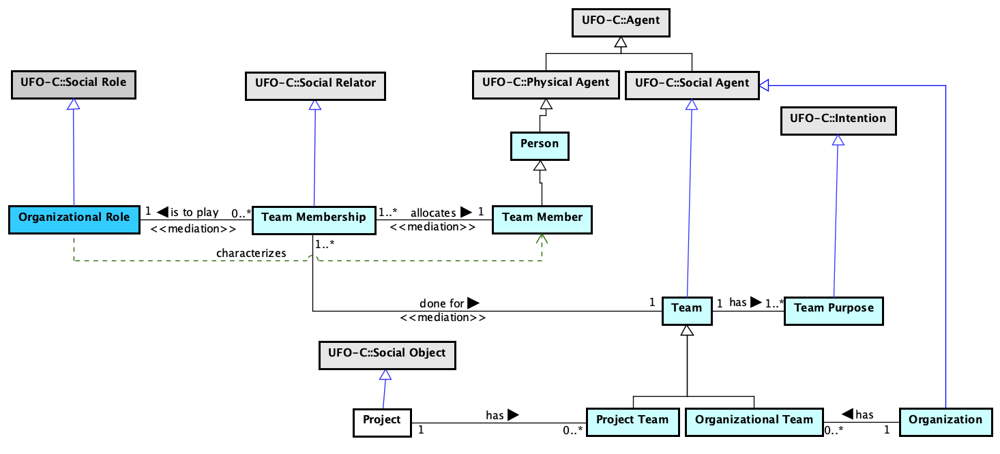

The Enterprise Ontology (external) (EO)
core ontology from SEON
1. Ontology Description
The Enterprise Ontology (EO) aims at establishing a common conceptualization on the Entreprise domain, including organizations, organizational units, people, roles, teams and projects.
Currently, it as considered external to SEON.
3. Ontology Models
Figure 1 presents the packages of the Teams.

Figure 1. Teams.
Project Team
Organizational Team
Team Membership
Figure 2 presents the packages of the Job Plan and Roles.

Figure 2. Job Plan and Roles.
3.1. Human Resource Management
Figure 3 presents the conceptual model of the HR Management subontology.

Figure 3. HR Management conceptual model.
3.2. Organizational Structure
Figure 4 presents the conceptual model of the Organizational Structure subontology.

Figure 4. Organizational Structure conceptual model.
4. Concepts Definition
The following table shows the definitions for EO concepts.
| Concept | Definition |
|---|---|
| Allocation Unit
|
|
| Business Role
|
|
| Complex Organizational Unit
|
|
| Complex Standalone Formal Organization
|
|
| Employment
|
|
| Employment Type
|
|
| Formal Organization
|
|
| Formal Organization Employer
|
|
| Formal Organization Member Type
|
|
| Formal Organization Type
|
|
| Human Resource
|
|
| Human Resource Role
|
|
| Job Plan
|
|
| Multi Formal Organization
|
|
| OU Assignment
|
|
| OU Assignment Type
|
|
| OU Member
|
|
| Organization
|
Same as UFO::Organization. A Social Agent involving people and other agents and facilities with an arrangement of responsibilities, authorities and relationships. E.g.: A company, an enterprise, a software house. |
| Organizational Role
|
A Social Role, recognized by the Organization, assigned to Agents when they are hired, included in a team, allocated or participating in activities.
E.g.: System Analyst, Designer, Programmer, Client Organization. |
| Organizational Team
|
|
| Organizational Unit
|
|
| Organizational Unit Type
|
|
| Project
|
A Social Object as a temporary endeavor undertaken to create a unique product, service, or result.
E.g.: A project to produce a software on demand. |
| Project Team
|
|
| Simple Organizational Unit
|
|
| Simple Standalone Formal Organization
|
|
| Standalone Formal Organization
|
|
| Team
|
Social Agent representing a group of people with a defined purpose.
E.g.: a Testing team, a Quality Assurance team, a Deployment team. |
| Team Member
|
|
| Team Membership
|
|
| Team Purpose
|
|
5. Detailed Concepts
Enterprise Ontology (external) (EO) detailed concepts.
<<role>>
Allocation Unit
EO::Allocation Unit
Specializes EO::Organizational Unit
Relations:
Allocation Unit <>-- OU Member <<memberOf>>
OU Assignment (1..*) assigns to (1..1) Allocation Unit <<mediation>>
<<2ndOT>>
Business Role
EO::Business Role
Specializes EO::Human Resource Role
Relations:
Business Role (0..*) covers (0..*) Business Role
Business Role (1..*) (0..*) OU Member <<instantiation>>
Formal Organization Member Type (1..*) covers (0..*) Business Role
OU Assignment Type (0..*) mediates business role (1..*) Business Role
Complex Organizational Unit
EO::Complex Organizational Unit
Specializes EO::Organizational Unit
Relations:
Complex Organizational Unit (0..1) <>-- (2..*) Simple Organizational Unit <<material>>
Complex Standalone Formal Organization
EO::Complex Standalone Formal Organization
Specializes EO::Standalone Formal Organization
Relations:
Complex Standalone Formal Organization (1..1) <>-- (2..*) Organizational Unit <<material>>
<<relator>>
Employment
EO::Employment
Specializes UFO::Social Relator
Relations:
Employment (0..*) made by (1..1) Formal Organization Employer <<mediation>>
Employment (1..*) employs (1..1) Human Resource <<mediation>>
Employment (0..*) to act as (1..1) Organizational Role <<mediation>>
Employment Type (1..1) (0..*) Employment <<instantiation>>
OU Assignment (0..*) refers to (1..1) Employment
<<2ndOT>>
Employment Type
EO::Employment Type
Specializes
Relations:
Employment Type (0..*) mediates org type (1..*) Formal Organization Type
Employment Type (0..*) mediates org member type (1..*) Formal Organization Member Type
Employment Type (1..1) (0..*) Employment <<instantiation>>
<<kind>>
Formal Organization
EO::Formal Organization
Specializes EO::Organization
Relations:
Formal Organization Type (1..*) (0..*) Formal Organization <<instantiation>>
<<role>>
Formal Organization Employer
EO::Formal Organization Employer
Specializes EO::Formal Organization
Relations:
Formal Organization Employer <>-- Human Resource <<memberOf>>
Employment (0..*) made by (1..1) Formal Organization Employer <<mediation>>
<<2ndOT>>
Formal Organization Member Type
EO::Formal Organization Member Type
Specializes EO::Human Resource Role
Relations:
Formal Organization Member Type (1..*) covers (0..*) Business Role
Formal Organization Member Type (1..*) (0..*) Human Resource <<instantiation>>
Employment Type (0..*) mediates org member type (1..*) Formal Organization Member Type
<<2ndOT>>
Formal Organization Type
EO::Formal Organization Type
Specializes
Relations:
Formal Organization Type (0..*) is compatible with org type (0..*) Formal Organization Type
Formal Organization Type (0..*) is compatible with unit type (0..*) Organizational Unit Type
Formal Organization Type (1..*) (0..*) Formal Organization <<instantiation>>
Employment Type (0..*) mediates org type (1..*) Formal Organization Type
<<role>>
Human Resource
EO::Human Resource
Specializes UFO::Role, UFO::Person
Relations:
Formal Organization Member Type (1..*) (0..*) Human Resource <<instantiation>>
Employment (1..*) employs (1..1) Human Resource <<mediation>>
Formal Organization Employer <>-- Human Resource <<memberOf>>
<<2ndOT>>
Human Resource Role
EO::Human Resource Role
Specializes
<<kind>>
Job Plan
EO::Job Plan
Specializes UFO::Normative Description
Relations:
Job Plan (1..1) defines (1..*) Organizational Role
Job Plan (0..*) recognized by (1..1) Organization
Multi Formal Organization
EO::Multi Formal Organization
Specializes EO::Formal Organization
Relations:
Multi Formal Organization (0..1) <>-- (2..*) Standalone Formal Organization <<material>>
<<relator>>
OU Assignment
EO::OU Assignment
Specializes
Relations:
OU Assignment (1..*) assigns (1..1) OU Member <<mediation>>
OU Assignment (1..*) assigns to (1..1) Allocation Unit <<mediation>>
OU Assignment (0..*) refers to (1..1) Employment
OU Assignment Type (1..1) (0..*) OU Assignment <<instantiation>>
<<2ndOT>>
OU Assignment Type
EO::OU Assignment Type
Specializes
Relations:
OU Assignment Type (0..*) mediates ou type (1..*) Organizational Unit Type
OU Assignment Type (0..*) mediates business role (1..*) Business Role
OU Assignment Type (1..1) (0..*) OU Assignment <<instantiation>>
<<role>>
OU Member
EO::OU Member
Specializes EO::Human Resource
Relations:
Allocation Unit <>-- OU Member <<memberOf>>
Business Role (1..*) (0..*) OU Member <<instantiation>>
OU Assignment (1..*) assigns (1..1) OU Member <<mediation>>
<<category>>
Organization
EO::Organization
Specializes UFO::Social Agent
Same as UFO::Organization.
A Social Agent involving people and other agents and facilities with an arrangement of responsibilities, authorities and relationships.
E.g.: A company, an enterprise, a software house.
Relations:
Organization (1..1) has (0..*) Organizational Team
Performed Organizational Process (0..*) performed in (1..1) Organization
Standard Process Definition Document (0..*) recognized by (1..*) Organization
Organizational Intended Process (0..*) defined for (1..1) Organization
Job Plan (0..*) recognized by (1..1) Organization
<<2ndOT>>
Organizational Role
EO::Organizational Role
Specializes UFO::Social Role
A Social Role, recognized by the Organization, assigned to Agents when they are hired, included in a team, allocated or participating in activities.
E.g.: System Analyst, Designer, Programmer, Client Organization.
Relations:
Team Membership (0..*) is to play (1..1) Organizational Role <<mediation>>
Stakeholder Participation (0..*) acts as (1..1) Organizational Role
Job Plan (1..1) defines (1..*) Organizational Role
Intended Activity (0..*) is to be performed by (0..*) Organizational Role
Employment (0..*) to act as (1..1) Organizational Role <<mediation>>
Operational Definition of Measure (0..*) indicates (0..1) Organizational Role
Standard Activity (0..*) is to be performed by (0..*) Organizational Role
Stakeholder Allocation (0..*) to act as (1..1) Organizational Role <<material>>
<<subkind>>
Organizational Team
EO::Organizational Team
Specializes EO::Team
Relations:
Organization (1..1) has (0..*) Organizational Team
<<kind>>
Organizational Unit
EO::Organizational Unit
Specializes EO::Organization
Relations:
Complex Standalone Formal Organization (1..1) <>-- (2..*) Organizational Unit <<material>>
Organizational Unit Type (1..*) (0..*) Organizational Unit <<instantiation>>
<<2ndOT>>
Organizational Unit Type
EO::Organizational Unit Type
Specializes
Relations:
Organizational Unit Type (0..*) is compatible with subunit type (0..*) Organizational Unit Type
Organizational Unit Type (1..*) (0..*) Organizational Unit <<instantiation>>
Formal Organization Type (0..*) is compatible with unit type (0..*) Organizational Unit Type
OU Assignment Type (0..*) mediates ou type (1..*) Organizational Unit Type
<<kind>>
Project
EO::Project
Specializes UFO::Social Object
A Social Object as a temporary endeavor undertaken to create a unique product, service, or result.
E.g.: A project to produce a software on demand.
Relations:
Project (1..1) has (0..*) Project Team
<<subkind>>
Project Team
EO::Project Team
Specializes EO::Team, SPO::Team Stakeholder
Relations:
Project Team participates in Adherence Evaluation
Project (1..1) has (0..*) Project Team
Simple Organizational Unit
EO::Simple Organizational Unit
Specializes EO::Organizational Unit
Relations:
Complex Organizational Unit (0..1) <>-- (2..*) Simple Organizational Unit <<material>>
Simple Standalone Formal Organization
EO::Simple Standalone Formal Organization
Specializes EO::Standalone Formal Organization
Standalone Formal Organization
EO::Standalone Formal Organization
Specializes EO::Formal Organization
Relations:
Multi Formal Organization (0..1) <>-- (2..*) Standalone Formal Organization <<material>>
<<kind>>
Team
EO::Team
Specializes UFO::Social Agent
Social Agent representing a group of people with a defined purpose.
E.g.: a Testing team, a Quality Assurance team, a Deployment team.
Relations:
Team (1..1) has (1..*) Team Purpose
Team (1..1) done for (1..*) Team Membership <<mediation>>
<<role>>
Team Member
EO::Team Member
Specializes UFO::Person
Relations:
Team Member (1..1) allocates (1..*) Team Membership <<mediation>>
<<relator>>
Team Membership
EO::Team Membership
Specializes UFO::Social Relator
Relations:
Team Membership (0..*) is to play (1..1) Organizational Role <<mediation>>
Team (1..1) done for (1..*) Team Membership <<mediation>>
Team Member (1..1) allocates (1..*) Team Membership <<mediation>>
<<mode>>
Team Purpose
EO::Team Purpose
Specializes UFO::Intention
Relations:
Team (1..1) has (1..*) Team Purpose